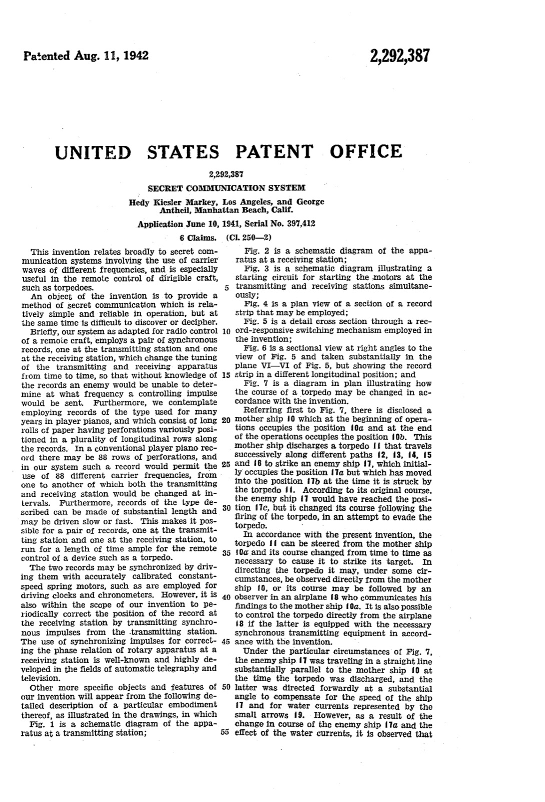
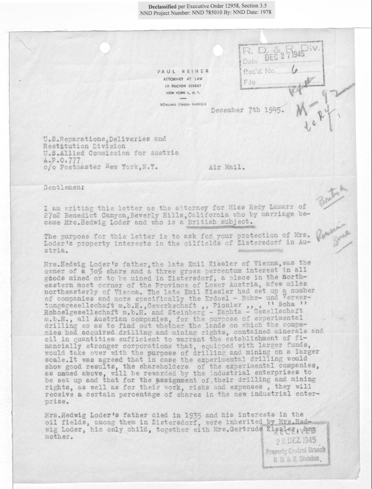
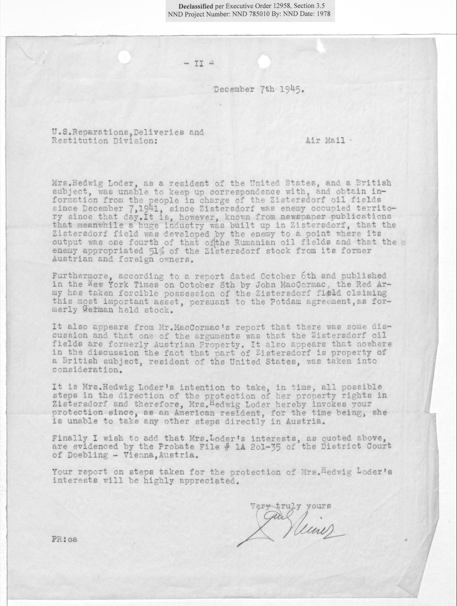

In the summer of 1941, a Hollywood film star filed a patent for a way to keep the enemy from jamming a torpedo. She signed it with her legal name: Hedy Kiesler Markey.

Hedy Lamarr
Hedy Lamarr arrived in America in 1937 as a film star. She left behind a husband who sold arms, a homeland about to be swallowed by Nazi Germany, and her father's fortune. Then, in the middle of a world war, she co-invented an idea that would become important to wireless communication.
The document behind this story

U.S. Patent 2,292,387, Secret Communication System, full specification (7 pages) — Hedy Kiesler Markey, Los Angeles, and George Antheil, Manhattan Beach, Calif., 1942-08-11.
The patent is seven pages long. Its first page of text sets out the whole idea in plain language — and explains why a Hollywood actress and a composer turned to the player piano.
Briefly, our system as adapted for radio control of a remote craft, employs a pair of synchronous records, one at the transmitting station and one at the receiving station, which change the tuning of the transmitting and receiving apparatus from time to time, so that without knowledge of the records an enemy would be unable to determine at what frequency a controlling impulse would be sent.
“As an American resident, for the time being, she is unable to take any other steps directly in Austria.”Her attorney, Paul Reiner, to the U.S. Reparations, Deliveries and Restitution Division in Austria, 7 December 1945 (National Archives, item 5).
The story
An only child in Vienna
She was born Hedwig Eva Maria Kiesler in Vienna on 9 November 1914, the only child of a wealthy Jewish family. Her father, Emil Kiesler, had business interests that reached as far as the oil fields of Zistersdorf in Lower Austria. He died in 1935.
She became an actress as a teenager. Her first major role, in the Czechoslovak film Ecstasy (1933), made her famous and scandalous across Europe. That same year she married Fritz Mandl, a wealthy munitions manufacturer and arms dealer.
Escape to Hollywood
In 1937 she left Mandl, and Austria. She reached America by way of London, where she met the Hollywood studio boss Louis B. Mayer, who was looking for European talent. Either in London or on board the liner Normandie, she signed a contract with Metro-Goldwyn-Mayer.
Mayer gave her a new name, Hedy Lamarr, after his favorite silent-film star, Barbara La Marr. According to the historian Ruth Barton, he "moved swiftly to strip Lamarr of all Jewish identifiers." Her first American film, Algiers, came out in 1938. A few months after she left, Nazi Germany annexed Austria.
The inventor
Lamarr and her friend George Antheil, an avant-garde composer, were fierce opponents of the Nazis. Together she worked out a way to steer a torpedo by radio without the enemy being able to jam the signal.
The trick was to keep changing the radio frequency. A transmitter on a ship and a receiver in the torpedo would hop from frequency to frequency at the same moment, guided by matching paper rolls like those in a player piano. "In a conventional player piano record there may be 88 rows of perforations," their patent explains, "and in our system such a record would permit the use of 88 different carrier frequencies."
They filed the patent on 10 June 1941. It was granted on 11 August 1942 as U.S. Patent 2,292,387, "Secret Communication System."
A British subject in Beverly Hills
Eight years after she left Vienna, the war ended — and her father's oil fields were in the Soviet zone of occupied Austria. In December 1945 her lawyer wrote to the U.S. Army in Vienna asking for help. The letter describes her as "Miss Hedy Lamarr of 2702 Benedict Canyon, Beverly Hills, California who by marriage became Mrs. Hedwig Loder and who is a British subject."
By then she was married to the British actor John Loder, and had taken his nationality. She had lived in America for eight years but was not yet an American. The Army forwarded her claim to the British.
American at last
Hedy Lamarr became a United States citizen on 10 April 1953, sixteen years after she arrived, at a ceremony in federal court in Los Angeles. A newspaper caption that day called her "the most famous of the 'All World' group who became citizens of the United States today" — new Americans chosen to represent different parts of the world. She died in Florida on 19 January 2000.
Late in her life the world caught up with her invention, which the National Inventors Hall of Fame calls "an important development in the field of wireless communications." In 1997 the Electronic Frontier Foundation honored her and Antheil, and in 2014 they were inducted into the National Inventors Hall of Fame.
The sources
Every fact on this page comes from one of these 11 items. Each links to the institution that holds it and gives that institution’s own rights wording.
-
U.S. Patent 2,292,387, Secret Communication System, drawing sheet 1
The anchor: her invention, under her legal name, in her own signature.
Rights, in the institution’s words: (no rights statement on the patent PDF)
-
U.S. Patent 2,292,387, Secret Communication System, full specification (7 pages)
The 88 frequencies and the player-piano rolls are in the patent's own words.
Rights, in the institution’s words: (no rights statement on the patent PDF)
-
Actress Hedy Lamarr, 1939
Taken in January 1939 for a Los Angeles Times story about her contract fight with MGM.
Rights, in the institution’s words: Rights statement: copyrighted. Rights holder: UCLA Charles E. Young Research Library Department of Special Collections. License: This work is licensed under a "Creative Commons BY Attribution 4.0 International".
-

Letter from Paul Reiner, attorney for Hedy Lamarr (Mrs. Hedwig Loder), to the U.S. Reparations, Deliveries and Restitution Division, Austria, 7 December 1945 (page 1)
Eight years after she left: Vienna, her father's legacy, and her nationality, in one letter.
Rights, in the institution’s words: Access Restriction(s): Unrestricted. Use Restriction(s): Unrestricted.
-

Letter from Paul Reiner, attorney for Hedy Lamarr, 7 December 1945 (page 2)
The war cut her off from home; the peace handed her inheritance to the Soviets.
Rights, in the institution’s words: Access Restriction(s): Unrestricted. Use Restriction(s): Unrestricted.
-
cover letter
Cover letter, Property Control Branch, Headquarters U.S. Forces in Austria, 7 January 1946
The U.S. Army passed her claim to the British — because she was not yet American.
Rights, in the institution’s words: Access Restriction(s): Unrestricted. Use Restriction(s): Unrestricted.
-
reference entry
Hedy Lamarr — National Inventors Hall of Fame inductee
Born 9 November 1914, died 19 January 2000; inducted 2014 for frequency hopping; notes the 1997 Electronic Frontier Foundation recognition.
Rights, in the institution’s words: (not checked; cited only)
-
biography
Hedy Lamarr
Her own country's account: an only child of a Viennese Jewish family, married to arms dealer Fritz Mandl in 1933, fled in 1937, MGM, Algiers (1938), citizen 1953.
Rights, in the institution’s words: (not checked; cited only)
-
press photograph
Become new citizens in 'All World' ceremony (Hedy Lamarr), 10 April 1953
The caption gives the day she became American: 'the most famous of the All World group who became citizens of the United States today in ceremony in federal court.'
Rights, in the institution’s words: Images available for reproduction and use. Please see the Ordering & Use page at http://tessa.lapl.org/OrderingUse.html for additional information.
-
press release
Movie Legend Hedy Lamarr to be Given Special Award at EFF's Sixth Annual Pioneer Awards
The 1997 recognition, in the organisation's own release: a special award 'for her co-invention of spread-spectrum broadcast communications technologies.'
Rights, in the institution’s words: (not checked; cited only)
-
encyclopedia entry
Hedy Lamarr
A scholar's account of her escape, her Jewish background, and how Mayer renamed and remade her.
Rights, in the institution’s words: (not checked; cited only)
Questions to talk about
- Lamarr signed her patent "Hedy Kiesler Markey," not "Hedy Lamarr." Why might an inventor use her legal name? What does the choice of names tell you about her life in 1941?
- In 1945 she had lived in the United States for eight years but was legally British. How can someone belong to a country without being a citizen of it?
- Her invention was patented in 1942 but only celebrated more than fifty years later. Why do you think it took so long?
- Hollywood sold her as a beautiful face. What did that image hide, and who benefited from it?
- What did Lamarr lose by leaving Austria? What did she gain?
Things to try
- Read a patent. Look at the patent drawing (item 1). Find the transmitting station, the torpedo and the two paper rolls. Then read the passage about the player piano. In your own words, explain to a younger student how frequency hopping works.
- Follow one document. The 1945 letter (items 4–6) travelled from a New York lawyer to the U.S. Army in Vienna and on to the British at Schönbrunn Palace. Draw its route on a map. Why did it go to the British? What does the journey tell you about Europe in 1945?